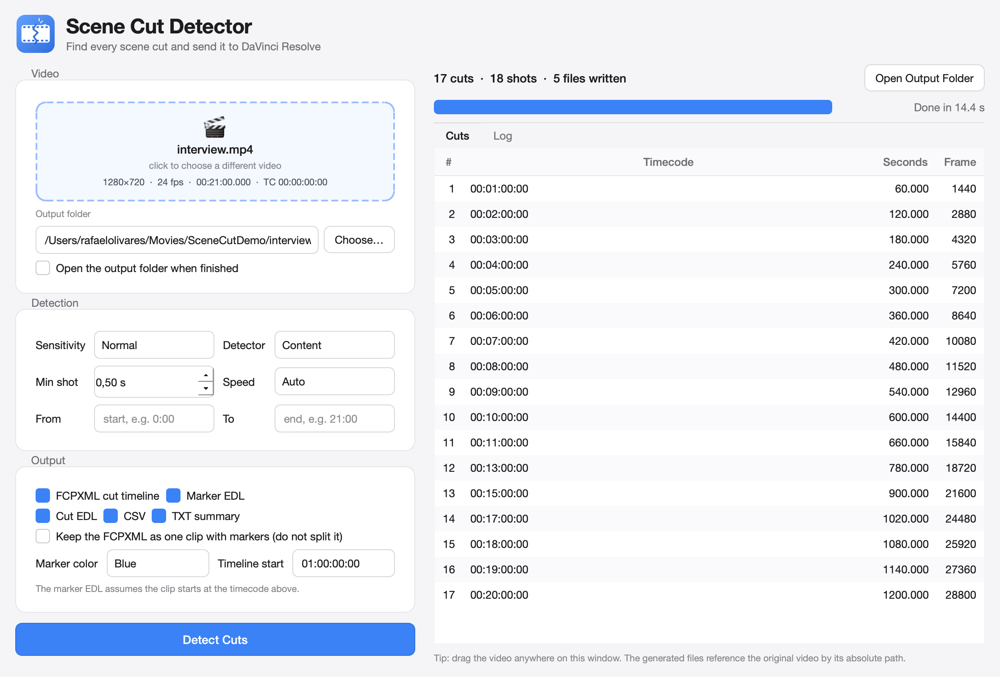

Drag, drop, done
A native Mac interface with sensible defaults, live progress and a full list of every detected cut. Cancel a run at any time.
Drop in a video and get a cut timeline, timeline markers, EDL, CSV and a readable report in seconds. Scene Cut Detector is a free macOS app for editors who would rather cut than scrub.
Free and open source (MIT) · macOS 12+ · Apple silicon · 83 MB

Features
No project setup, no cloud uploads, no account. Just your video and the cuts you need.
A native Mac interface with sensible defaults, live progress and a full list of every detected cut. Cancel a run at any time.
Import a pre-cut FCPXML timeline, or drop one timeline marker at every cut on the timeline you already have.
FCPXML, Resolve marker EDL, CMX3600 cut EDL, CSV and a human-readable TXT report. Pick only the ones you need.
Reads embedded source timecode and supports drop-frame (29.97 / 59.94). Set the exact timecode where your timeline starts.
Powered locally by PySceneDetect. Automatic downscaling keeps long 4K files manageable, and your footage never leaves your Mac.
The same detection engine ships with a command-line interface, so you can batch, script or integrate it into your own pipeline.
How it works
Drag a file onto the window or click to browse. Choose a sensitivity preset and, if you want, an analysis range.
Watch the progress, then review every cut with its timecode, seconds and frame number in the results table.
Open the generated FCPXML as a new timeline, or import the marker EDL onto your current timeline. That's it.
Exports
Everything is written next to your video in a _cuts folder, ready to import.
your-video_cuts.fcpxml
Recommended
A brand-new timeline with one clip per shot, cut exactly at every detection. Import with File → Import → Timeline.
your-video_markers.edl
Markers
One colored marker per cut on your existing timeline. Right-click the timeline in the Media Pool and choose Timelines → Import → Timeline Markers from EDL.
your-video_cuts.edl
The classic EDL workflow, with embedded source timecode and drop-frame support. Useful when FCPXML is not an option.
your-video_cuts.csv · .txt
A structured cut and shot list for spreadsheets or scripts, plus a plain-text summary with shot statistics.
Download
Standalone app for Apple silicon. Python, PySide6, OpenCV and PySceneDetect are all included — nothing else to install.
Download 2.0.0-beta.1The app is not notarized yet. After moving it to Applications, right-click it and choose Open the first time.
Prefer the source? Follow the installation guide or browse the release notes.
FAQ
Yes. Scene Cut Detector is open source under the MIT license. You can use it for personal or commercial work, and the code is on GitHub.
No. Detection runs entirely on your Mac with PySceneDetect. There is no account, no cloud service and no telemetry.
For a new pre-cut timeline, import the FCPXML with File → Import → Timeline. To review cuts on your current timeline, import the marker EDL with Timelines → Import → Timeline Markers from EDL.
By default it assumes the clip starts at 01:00:00:00, the usual Resolve timeline start. You can change it to 00:00:00:00 or any other timecode in the app.
This beta is not signed or notarized yet. Right-click the app and choose Open the first time. You can also run it from source with the installer script.
The detection engine and CLI are plain Python and platform-independent. This beta ships macOS installers and an Apple silicon app bundle; other platforms can run gui.py manually with the dependencies installed.